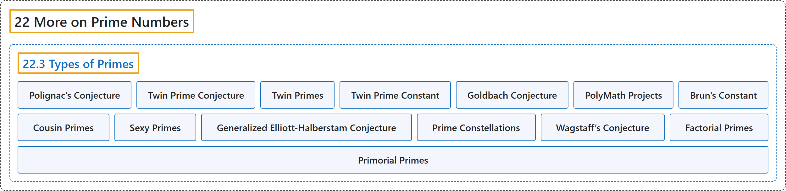

22.3 Types of Primes
Classification

Glossary
| Term | Definition | 中文翻译 | Source |
|---|---|---|---|
| 22.3 Types of Primes 素数的类型 |
(No definition) | （无定义） | Crisman, 2024, section 22.3 |
| Polignac’s Conjecture 波利尼亚克猜想 |
"Every even number is the difference between consecutive primes in infinitely many ways." | 每个偶数都能以无穷多种方式写成相邻素数之差。 | Crisman, 2024, Conjecture 22.3.2 |
| Twin Prime Conjecture 孪生素数猜想 |
"There are infinitely many consecutive odd prime numbers." | 存在无穷多对相邻的奇素数。 | Crisman, 2024, Conjecture 22.3.3 |
| Twin Primes 孪生素数 |
"Pairs of primes \(p\) and \(q\) such that \(p+2=q\) are called twin primes." | 满足 \(p+2=q\) 的素数对 \(p\) 和 \(q\) 称为孪生素数。 | Crisman, 2024, Definition 22.3.4 |
| Twin Prime Constant 孪生素数常数 |
"The constant part of this formula is finite, and known as the twin prime constant: \(C_2=2\prod_{p>2}\left( 1-\frac{1}{p-1}^2\right)\)." | 这个公式中的常数部分是有限的，称为孪生素数常数：\(C_2=2\prod_{p>2}\left( 1-\frac{1}{p-1}^2\right)\)。 | Crisman, 2024, Remark 22.3.6 |
| Goldbach Conjecture 哥德巴赫猜想 |
"Any even number can be written in at least one way as a sum of two primes." | 任何偶数都至少能以一种方式写成两个素数之和。 | Crisman, 2024, Conjecture 22.3.8 |
| PolyMath Projects PolyMath 项目 |
"This was a huge improvement over previous results, and further work of an unusually collaborative nature have now reduced this bound to \(N\leq 246\), but the effort has not continued progress." | 这是对以往结果的巨大改进，而一种异常协作式的后续工作已把这个界降到 \(N\leq 246\)，但这项努力没有再取得进展。 | Crisman, 2024, Historical remark 22.3.10 |
| Brun’s Constant 布伦常数 |
"Although there may really be infinitely many pairs, the sum of their reciprocals \(\sum_{p,p+2 \text{ both prime}} \frac{1}{p}+\frac{1}{p+2}\) is still a finite constant. At the very least means twin primes must be pretty rare. This (possibly infinite) sum is called Brun’s constant." | 尽管这样的数对可能确实有无穷多，它们的倒数之和 \(\sum_{p,p+2 \text{ both prime}} \frac{1}{p}+\frac{1}{p+2}\) 仍是一个有限常数。这至少意味着孪生素数一定相当稀少。这个（项数可能无穷的）和称为布伦常数。 | Crisman, 2024, subsection 22.3.2 |
| Cousin Primes 表兄弟素数 |
"In the quest toward Polignac’s Conjecture, researchers have dubbed primes (not necessarily consecutive) with spacing \(N=4\) cousin primes and those \(N=6\) apart sexy primes." | 在追寻波利尼亚克猜想的过程中，研究者把间距为 \(N=4\) 的素数（不一定相邻）称为表兄弟素数，把相距 \(N=6\) 的称为六素数。 | Crisman, 2024, subsection 22.3.3 |
| Sexy Primes 六素数 |
"In the quest toward Polignac’s Conjecture, researchers have dubbed primes (not necessarily consecutive) with spacing \(N=4\) cousin primes and those \(N=6\) apart sexy primes." | 在追寻波利尼亚克猜想的过程中，研究者把间距为 \(N=4\) 的素数（不一定相邻）称为表兄弟素数，把相距 \(N=6\) 的称为六素数。 | Crisman, 2024, subsection 22.3.3 |
| Generalized Elliott-Halberstam Conjecture 广义 Elliott-Halberstam 猜想 |
"In another result of similar vintage to Zhang’s (and also collaborative like its refinement), we know (conditional upon the so-called “generalized Elliott-Halberstam conjecture”, which is closely related to our investigations in Subsection 22.2.2) that at least one of the classes of twin, cousin, or sexy primes is infinite" | 在与张益唐的结果同时期的另一个结果中（它也像那个改进一样是协作完成的），我们知道（以所谓“广义 Elliott-Halberstam 猜想”为条件，它与我们在 22.2.2 小节中的研究密切相关）孪生、表兄弟或六素数这几类中至少有一类是无穷的 | Crisman, 2024, subsection 22.3.3 |
| Prime Constellations 素数星座 |
"This is a very special case of exploring something called prime constellations; see Exercise 22.4.13." | 这是探索所谓素数星座的一个非常特殊的情形；见习题 22.4.13。 | Crisman, 2024, subsection 22.3.3 |
| Wagstaff’s Conjecture 瓦格斯塔夫猜想 |
"Using similar ideas, one can get a heuristic that Mersenne primes are distributed as \(e^{\gamma}\log(\log(x))/\log(2)\). This is known as Wagstaff’s conjecture." | 用类似的想法，可以得到一个启发式估计：梅森素数的分布为 \(e^{\gamma}\log(\log(x))/\log(2)\)。这称为瓦格斯塔夫猜想。 | Crisman, 2024, subsection 22.3.3 |
| Factorial Primes 阶乘素数 |
"Bizarrely, one can use the same idea to get a heuristic for factorial primes. These are primes of the form \(n! \pm 1\), like 5, 7, 23, and 719." | 奇妙的是，可以用同样的想法得到关于阶乘素数的启发式估计。它们是形如 \(n! \pm 1\) 的素数，如 5、7、23 和 719。 | Crisman, 2024, subsection 22.3.3 |
| Primorial Primes 素数阶乘素数 |
"These rules of thumb even seem to apply to the so-called primorial primes – primes of the form \(p\#\pm 1\), like 3, 5, 7, 29, 31, 211, etc." | 这些经验法则似乎甚至适用于所谓的素数阶乘素数，即形如 \(p\#\pm 1\) 的素数，如 3、5、7、29、31、211 等。 | Crisman, 2024, subsection 22.3.3 |
References
Crisman, K.-D. (2024). Number theory: In context and interactive (June 26, 2024 edition). Gordon College. Retrieved October 29, 2026, from https://math.gordon.edu/ntic/ntic/